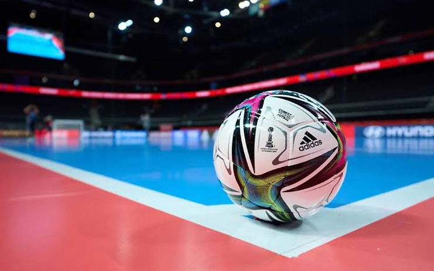

COB exclui a modalidade dos Jogos da Juventude
Texto de Aline Lobo

O COB (Comitê Olímpico Brasileiro) justifica a retirada do futsal através do motivo mais doloroso para os amantes do futebol de salão: por não ser um esporte olímpico. Dessa forma, o “sonho olímpico” vai ficando cada vez mais distante. O Futsal continua perdendo espaço, crédito e mídia.
Como o COB pode ter a premissa de selecionar as modalidades para os Jogos da Juventude com base na justificativa de ser ou não ser olímpico? Se essa retirada compromete mais ainda em se tornar olímpico? E como ficará a juventude da modalidade de futsal no Brasil?
Conforme o Art.1 do capítulo I do Regulamento Geral do evento:Os Jogos da Juventude têm por finalidade contribuir para o fortalecimento do Movimento Olímpico do Brasil, bem como aumentar e incentivar a prática esportiva entre os jovens, especialmente os que integram a rede de escolas públicas e privadas de todo o país, bem como promover a ampla mobilização da juventude brasileira em torno do esporte.
Me arrisco em afirmar que o futsal é o esporte mais praticado nas escolas do Brasil. Primeiramente, a paixão do brasileiro pelo Futebol, e, consequentemente as exigências das escolas de terem uma área coberta destinada a prática de Educação Física, o que torna um ambiente familiar e acessível. Sem contar o custo e benefício de uma quadra ser bem menor do que um campo gramado. O que torna viável o Futsal ser o esporte com maior número de times nos campeonatos escolares.
Ainda que muitas escolas não tenham uma estrutura adequada para as aulas de Educação Física, parto do pressuposto de que o maior público de adolescentes praticantes de esportes são das escolas e dos projetos e programas sociais.
Meu percurso como atleta de Futsal iniciou nos anos 2000 durante o ensino fundamental, dando continuidade na universidade no curso de Educação Física, e depois como professora e técnica de Futsal em jogos escolares. Essa trajetória me possibilitou vivenciar o fenômeno do Futsal nas competições escolares no Nordeste, e perceber o quanto esse esporte tem um peso no desenvolvimento social de tantos jovens. O esporte é uma grande ferramenta social de políticas públicas, antes mesmo de pensar em alto rendimento, é acima de tudo promoção de saúde, um direito de todos. E sim, o alto rendimento tem muito a ganhar quando há uma valorização desse processo.
O Futsal aparece como base para a maioria dos atletas profissionais de Futebol, e digo mais, para os nossos maiores craques. O Neymar, por exemplo, iniciou seu sucesso nas quadras santistas, destacando-se e partindo para o campo. A questão é que no país do Futebol, o Futsal não aparece como sonho de carreira para as crianças e adolescentes que amam a modalidade.
Mas por que uma criança ou adolescente não sonha em ser um jogador de Futsal no Brasil? O Neymar, em uma entrevista na quadra do Santos aos 9 anos, falou sobre a esperança do sucesso na carreira do Futebol, após uma brilhante partida de Futsal. “Eu mesma, que sempre joguei Futsal sonhava em ser jogadora da seleção brasileira de Futebol. Essa expectativa surgiu ao assistir ao jogo do Brasil e EUA nas olimpíadas de 2000, o qual foi transmitido na TV. Ali pude perceber que eu podia jogar Futebol da mesma forma que os homens jogavam toda semana na TV”.
Como sonhar em ser jogador de Futsal se as portas se fecham para essa modalidade e se a mídia e o mercado esportivo não investem em maior visibilidade?
Se historicamente o Futebol é considerado o esporte mais representativo do Brasil, a mídia muito contribui com esse imaginário e realidade, mas o Futsal brasileiro também merece maior visibilidade e reconhecimento. O Futsal nasceu na América Latina, é penta campeão mundial nos anos de 89, 92, 96, 2008 e 2012 pela FIFA (Federação Internacional de Futebol) e bicampeão pela antiga FIFUSA (Federação Internacional de Futebol de Salão) em 82 e 85.
A retirada do Futsal dos – Jogos da Juventude – deixa inúmeros jovens atletas sem esperança, só mostra a falta de reconhecimento, valor e visão pela instituição que gerencia o Futebol (CBF) da importância dessa modalidade no país. Elucidando que este campeonato é um evento esportivo “escolar”. Muitos adolescentes em sua carreira esportiva escolar, que recebem bolsa atleta e/ou bolsa para estudarem em escolas particulares, tem uma longa trajetória de treinamento e competições e esperam por esse campeonato que tem uma força na formação do atleta. Muitas consequências precisam ser consideradas, pois implicam na questão emocional, social, financeira, dos atletas, familiares e outros envolvidos. Além dos prejuízos que a modalidade do Futsal enfrentará como expressão social, histórica e cultural, entre outros.
O Futsal não é um esporte olímpico e as razões vão para além das regras necessárias da carta olímpica de inclusão. O impasse acontece no jogo de poder entre a FIFA e o COI (Comitê Olímpico Internacional), as duas entidades responsáveis pelos dois megaeventos (Olimpíadas e a Copa do Mundo de Futebol). O Futebol é um esporte olímpico desde 1900. Será que a FIFA têm interesse em ampliar o espetáculo do Futebol? Quais seriam os interesses que estariam nos bastidores dessa exclusão?
Não dá pra ampliar essa discussão aqui, mas sabemos que há figuras que representam esse cenário como os aspectos políticos, que envolve a mídia e o mercado esportivo, sendo o COB e a CBF os personagens nacionais.
É inacreditável que o Futsal tenha sido retirado dos Jogos da Juventude em 2023. O esporte perde a alma, o espírito cultural da modalidade, a responsabilidade social e o sentido do jogo. Perde o fenômeno esportivo das competições para a máquina política que globaliza os megaeventos “o lucro” “o poder” e o esporte vira instrumento nesse processo de mídia, patrocínio e vendas.
A intenção não foi trazer uma resposta, mas, ampliar a discussão política que envolve a exclusão do Futsal dos Jogos da Juventude.
Sobre a autora:
Aline Lobo
Nordestina, Cearense, nascida Carioca, 13 anos de experiência com o Futsal.
Profissional de Educação Física e psicóloga clínica e do esporte.
Pós-graduada em Exercício físico como terapia para doenças psiquiátricas e pós-graduada em Gestalt-terapia.
Ex-psicóloga da Comissão de Arbitragem Maranhense de Futebol – Registrada na CBF.